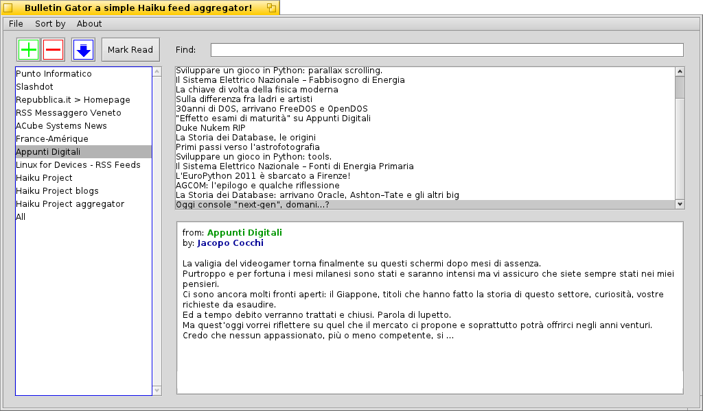

A simple Feed
Aggregator
Jul 2, 2011 by Fabio Tomat aka
TmTFx
This piece of code is a simple Feed Aggregator for Haiku and
BeOS written in python.
I hope you enjoy it even if it has a lot of limits.
The program stores in a database the feeds of your favorite newspapers
and at your command it downloads the latest news; if available it can
display a little summary of the news and if you want you can open the
news in your web browser.
The code is released under GNU GPL v3 license:
This program is free software: you can redistribute it and/or modify
it under the terms of the GNU General Public License as published by
the Free Software Foundation, either version 3 of the License, or
(at your option) any later version.
This program is distributed in the hope that it will be useful,
but WITHOUT ANY WARRANTY; without even the implied warranty of
MERCHANTABILITY or FITNESS FOR A PARTICULAR PURPOSE. See the
GNU General Public License for more details.
You should have received a copy of the GNU General Public License
along with this program. If not, see <http://www.gnu.org/licenses/>.
btw the program looks like this:

|